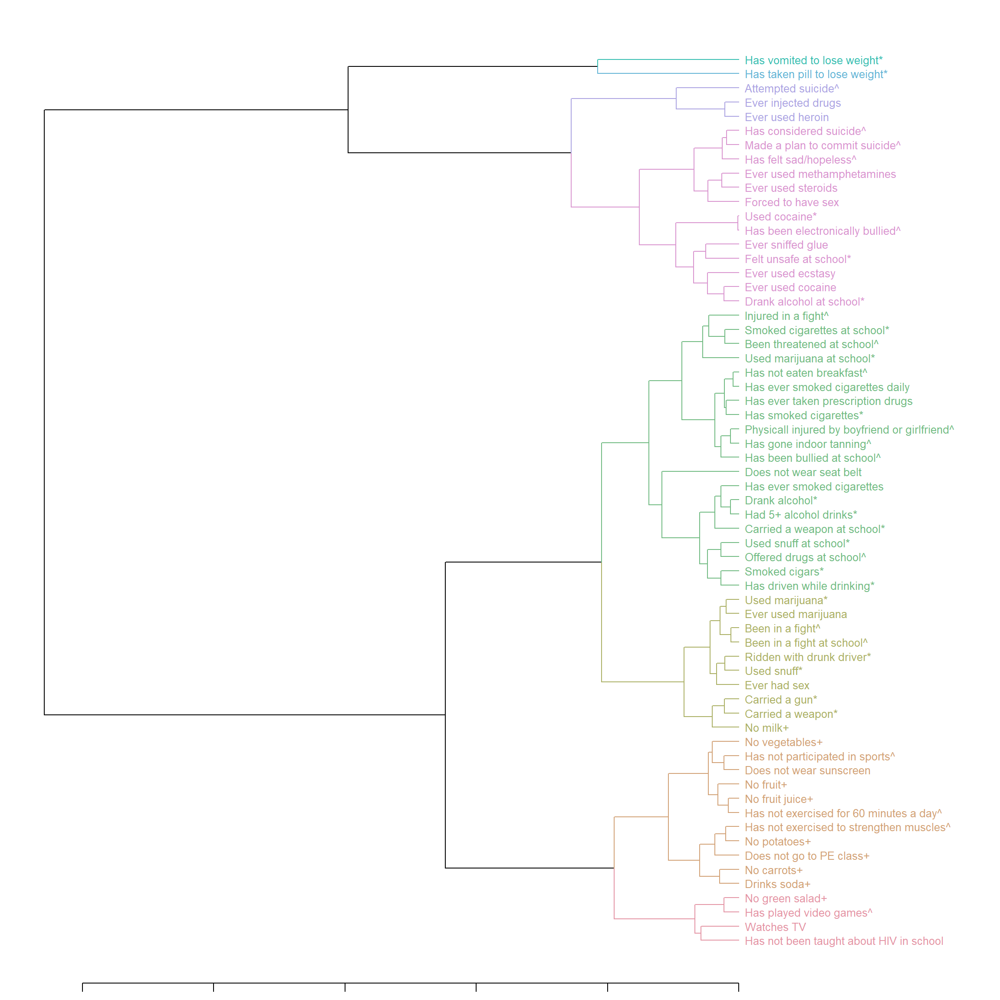
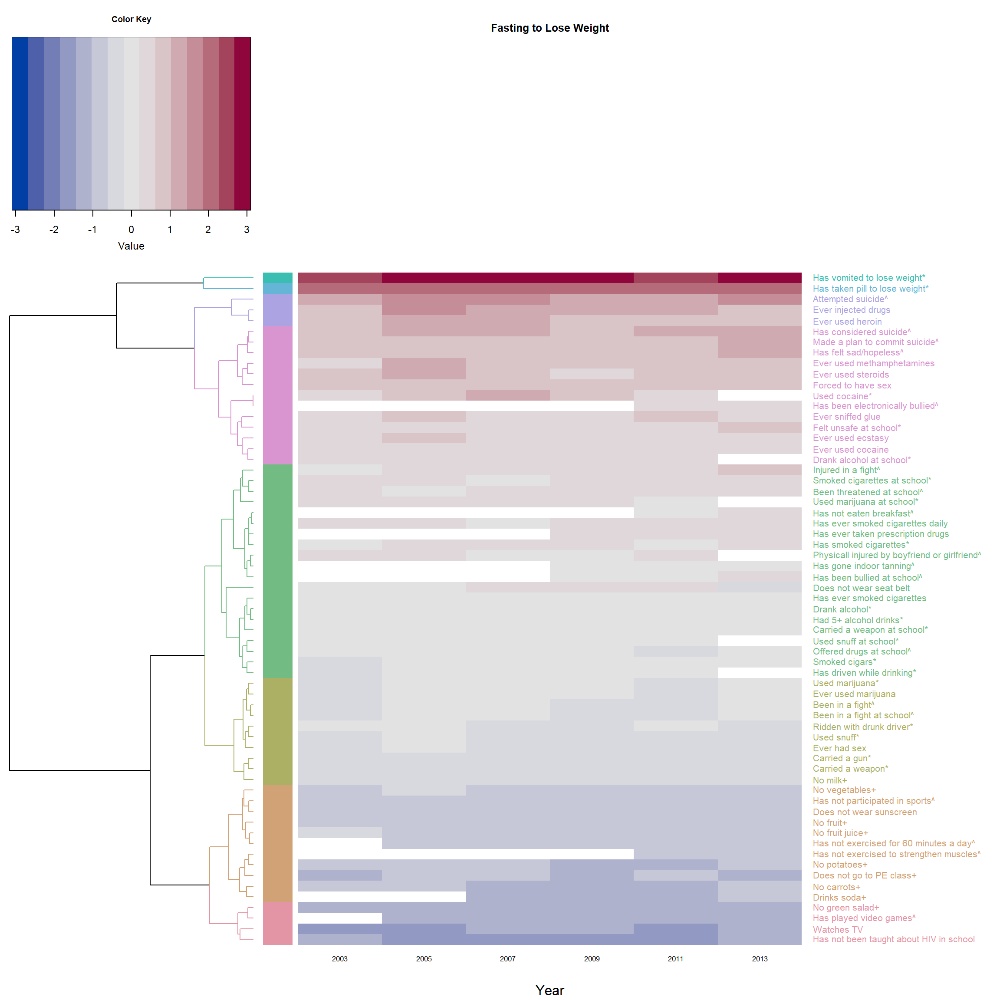
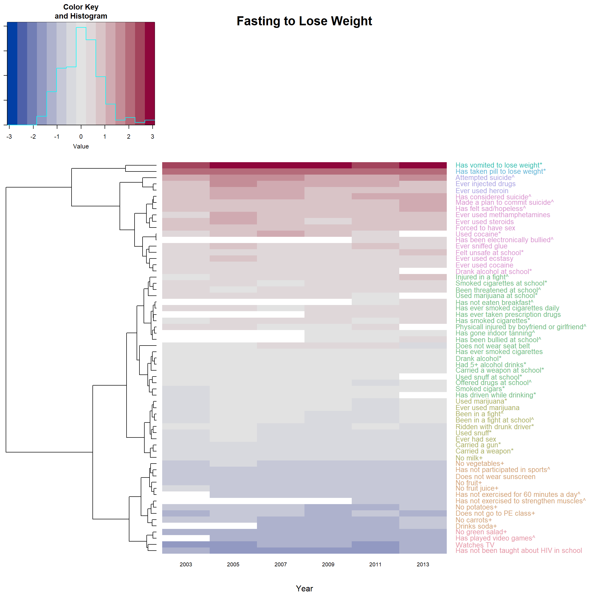
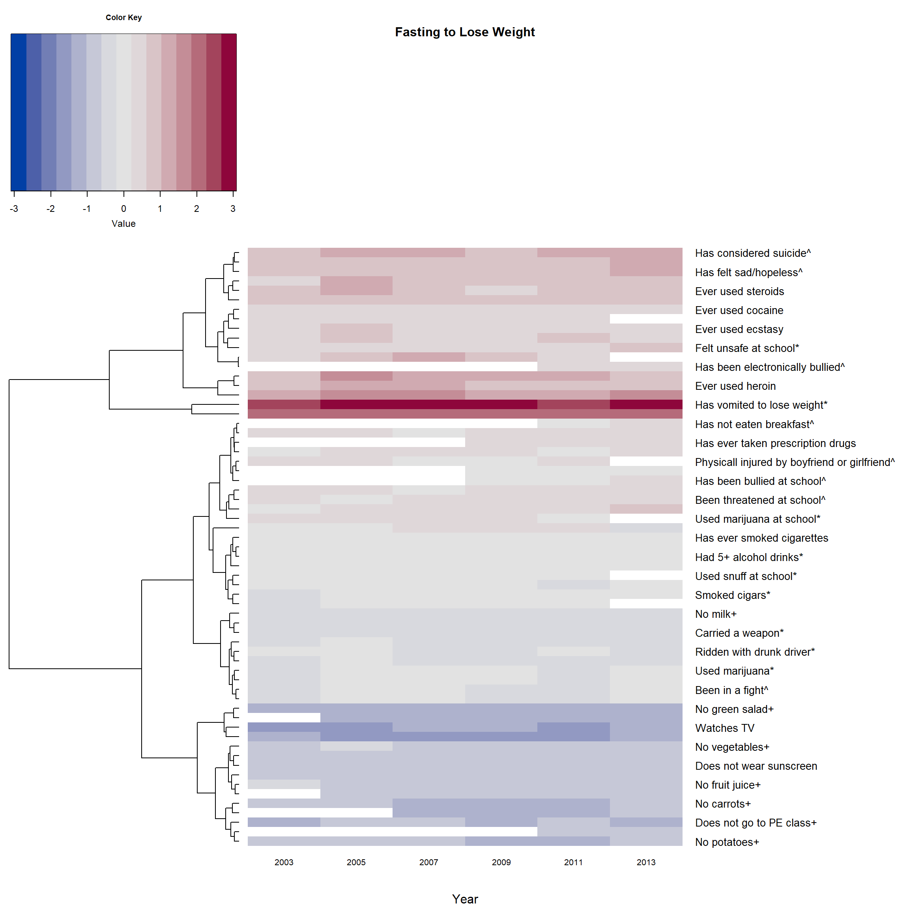

How to Draw Heatmap with Colorful Dendrogram
Data Visualization
Data Version 1: Color both the branches and labels Version 2: color only the labels. Version 3: If there is no color, and we do not reorder the branches This data visualization example include: * Hierarchical clustering…
This data visualization example include:
* Hierarchical clustering, dendrogram and heat map based on normalized odds ratios
* The dendrogram was built separately to give color to dendrogram’s branches/labels based on cluster using dendextend
* Heatmap is made by heatmap.2 from gplots using the built dendrogram
* The rows are sorted by means from highest to lowest, it can be done in either the dendrogram or the heatmap.2
* Use color palettes from colorspace
Data
-
YRBSS (Youth Risk Behavior Surveillance System) survey data from CDC. This example plots the odds ratios of 63 behavioral questions on one question regarding disordered eating.
- The odds ratios are median centered by column and log2 transformed
Version 1: Color both the branches and labels
suppressPackageStartupMessages({
library(curl) # read file from google drive
library(gplots) # heatmap.2
library(dendextend) # make and color dendrogram
library(colorspace) # diverge_hcl / rainbow_hcl / heat_hcl color palettes
})
id <- "1pIPphAGJcjKxkgWKrS_heLyjEPxOEYl4" # google file ID
Fasted <- read.csv(sprintf("https://docs.google.com/uc?id=%s&export=download", id))
# The ID is contained in the sharing link copied from google drive:
# https://drive.google.com/file/d/1pIPphAGJcjKxkgWKrS_heLyjEPxOEYl4/view?usp=sharing
# the dataset can be downloaded using this link as well.
names(Fasted) <- c("Questions", "2003", "2005", "2007", "2009", "2011", "2013")
# Top 5 questions and their odds ratio on Eating disorder: fasting to loose weight
head(Fasted, 5)## Questions 2003 2005 2007 2009
## 1 Has vomited to lose weight* 11.777595 14.518211 15.970263 15.811237
## 2 Has taken pill to lose weight* 7.327949 7.730568 8.192262 9.330225
## 3 Attempted suicide^ 4.815106 5.777019 5.837320 5.828913
## 4 Has considered suicide^ 3.634248 4.166731 4.189314 3.862336
## 5 Made a plan to commit suicide^ 3.666772 3.894834 4.097571 4.020502
## 2011 2013
## 1 14.050416 16.791709
## 2 8.227031 7.803919
## 3 5.450131 5.881054
## 4 4.542538 4.750469
## 5 4.151721 4.541670## Normalization, re-format into matrix ##
F_m <- as.matrix(Fasted[,2:7],dimnames=list((Fasted$Questions), names(Fasted)[2:7]))
# normalized by column median (direction: 2) and log2.
F_m2 <- (apply(F_m, 2, function(x){log2(x/median(x, na.rm = T))}))
# add the labels (Questions)
dimnames(F_m2)[1] <- list(Fasted$Questions)
## Add colors to dendrogram ##
# library(dendextend)
# library(colorspace)
# distance & hierarchical clustering
dend1 <- as.dendrogram(hclust(dist(F_m2)))
c_group <- 8 # number of clusters
dend1 <- color_branches(dend1, k = c_group, col = rainbow_hcl) # add color to the lines
dend1 <- color_labels(dend1, k = c_group, col = rainbow_hcl) # add color to the labels
# reorder the dendrogram, must incl. `agglo.FUN = mean`
rMeans <- rowMeans(F_m2, na.rm = T)
dend1 <- reorder(dend1, rowMeans(F_m2, na.rm = T), agglo.FUN = mean)
# get the color of the leaves (labels) for `heatmap.2`
col_labels <- get_leaves_branches_col(dend1)
col_labels <- col_labels[order(order.dendrogram(dend1))]
# if plot the dendrogram alone:
# the size of the labels:
dend1 <- set(dend1, "labels_cex", 0.8)
par(mar = c(1,1,1,14))
plot_horiz.dendrogram(dend1, side = F) # use side = T to horiz mirror if needed

## plot the heatmap with the dendrogram above ##
par(cex.main=0.8) # adjust font size of titles
heatmap.2(F_m2, main = 'Fasting to Lose Weight',
# reorderfun=function(d, w) reorder(d, w, agglo.FUN = mean),
# order by branch mean so the deepest color is at the top
dendrogram = "row", # no dendrogram for columns
Rowv = dend1, # * use self-made dendrogram
Colv = "NA", # make sure the columns follow data's order
col = diverge_hcl, # color pattern of the heatmap
trace="none", # hide trace
density.info="none", # hide histogram
margins = c(5,18), # margin on top(bottom) and left(right) side.
cexRow=1, cexCol = 0.8, # size of row / column labels
xlab = "Year",
srtCol=0, adjCol = c(0.5,1), # adjust the direction of row label to be horizontal
# margin for the color key
# ("bottom.margin", "left.margin", "top.margin", "left.margin" )
key.par=list(mar=c(5,1,3,1)),
RowSideColors = col_labels, # to add nice colored strips
colRow = col_labels # add color to label
)

Version 2: color only the labels.
-
There is no need to use the predesigned
dend1inheatmap.2
-
But then need to reorder the trees by adding
reorderfun
-
Still need to create the
col_labels
heatmap.2(F_m2, main = 'Fasting to Lose Weight',
reorderfun=function(d, w) reorder(d, w, agglo.FUN = mean),
# order by branch mean so the deepest color is at the top
dendrogram = "row", # no dendrogram for columns
# Rowv = dend1, # * use self-made dendrogram
Colv = "NA", # make sure the columns follow data's order
col = diverge_hcl, # color pattern of the heatmap
trace="none", # hide trace
# density.info="none", # hide histogram
margins = c(5,18), # margin on top(bottom) and left(right) side.
cexRow=1, cexCol = 0.8, # size of row / column labels
xlab = "Year",
srtCol=0, adjCol = c(0.5,1), # adjust the direction of row label to be horizontal
# margin for the color key
# ("bottom.margin", "left.margin", "top.margin", "left.margin" )
key.par=list(mar=c(5,1,3,1)),
# RowSideColors = col_labels, # to add nice colored strips
colRow = col_labels # add color to label
)

Version 3: If there is no color, and we do not reorder the branches
-
Then there is no need to create an extra dendrogram using
dendextend
par(cex.main=0.8) # adjust font size of titles
heatmap.2(F_m2, main = 'Fasting to Lose Weight',
# reorderfun=function(d, w) reorder(d, w, agglo.FUN = mean),
# order by branch mean so the deepest color is at the top
dendrogram = "row", # no dendrogram for columns
Colv = "NA", # make sure the columns follow data's order
col = diverge_hcl, # color pattern of the heatmap
trace="none", # hide trace
density.info="none", # hide histogram
margins = c(5,18), # margin on top(bottom) and left(right) side.
cexRow=1, cexCol = 0.8, # size of row / column labels
xlab = "Year",
srtCol=0, adjCol = c(0.5,1), # adjust the direction of row label to be horizontal
# margin for the color key
# ("bottom.margin", "left.margin", "top.margin", "left.margin" )
key.par=list(mar=c(5,1,3,1))
)
